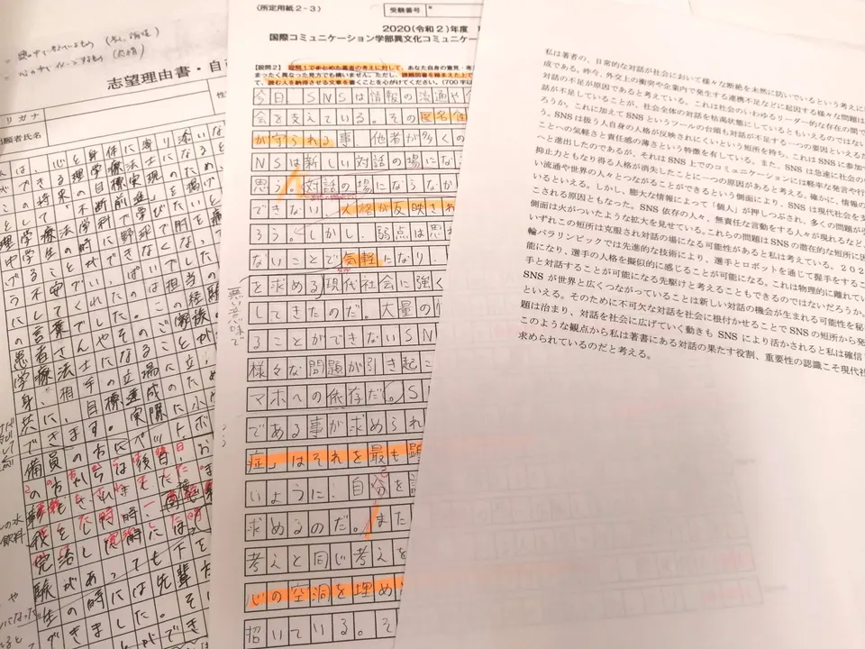
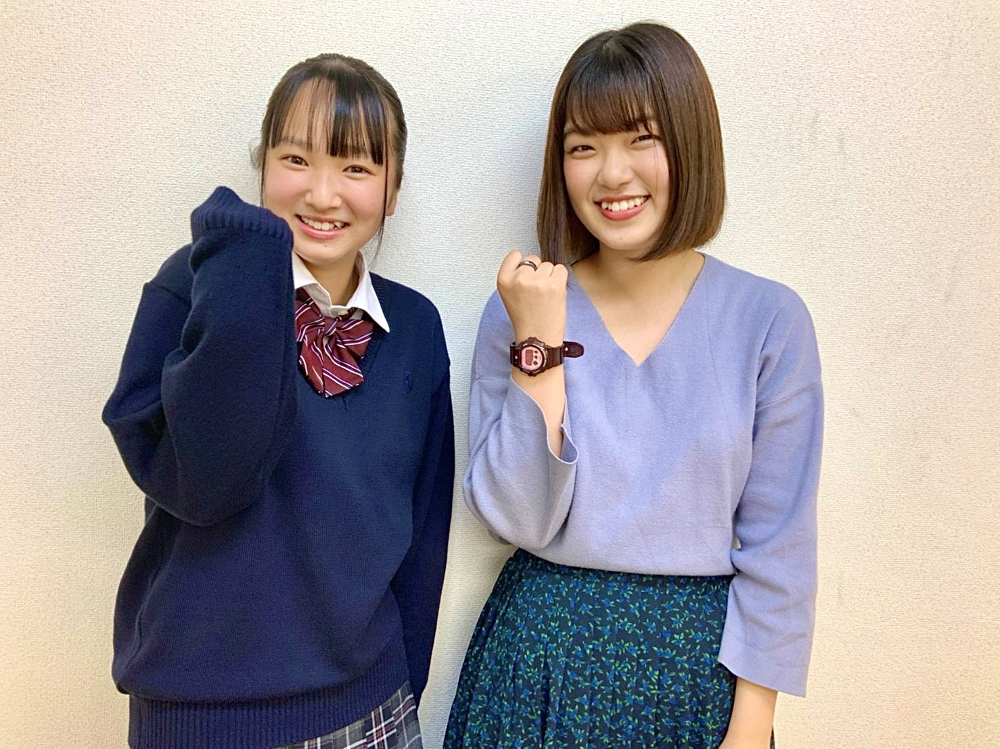
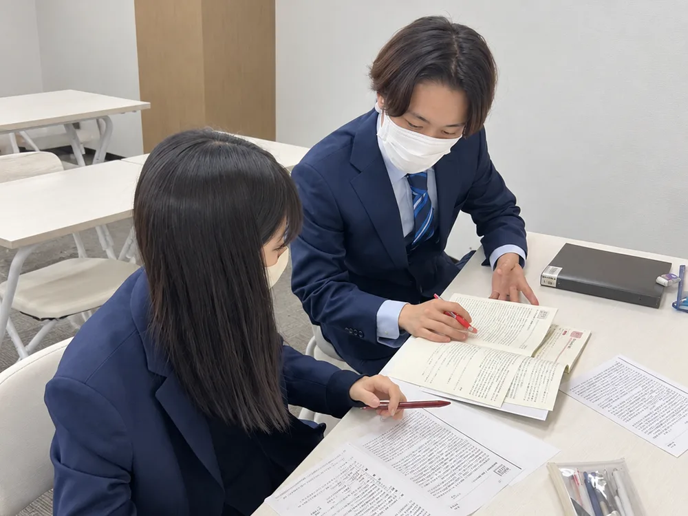
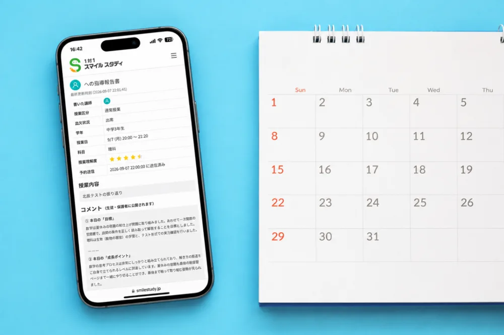
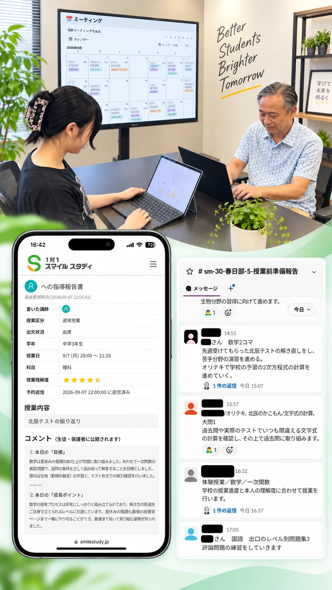

目標点から逆算し、やることを絞る
定期テスト、北辰テスト、志望校から逆算し、お子様にとって本当に点数につながる単元を見極めます。
ONE TO ONE SMILE STUDY KOSHIGAYAPRE-OPEN NOV. / GRAND OPEN DEC. 2026
その理由は、
完全１対１だから、伸びしろを見逃さない。１対１スマイルスタディ越谷校は、春日部校で培ってきた指導哲学と合格戦略をもとに、お子様の学力・性格・目標に合わせて、本当に必要な学習を設計する完全１対１個別指導塾です。
FOR PARENTS
家で勉強しない。数学のどこから戻ればいいか分からない。英語が単語暗記だけで止まっている。部活が忙しくて、勉強時間が取れない。そんなとき、必要なのは“もっと量を増やすこと”ではなく、お子様の現在地を正しく見ることです。
家でまったく勉強しない
数学のどこから戻ればいいか分からない
英語が単語暗記だけで止まっている
部活が忙しく、勉強時間が取れない
志望校や受験の作戦が決まらない
塾に通っているのに成果が見えない
OUR PHILOSOPHY
スマイルスタディが大切にしているのは、お子様の夢や目標を叶える応援をすることです。たとえ入塾前の成績がどんな状態であっても、どこまでも可能性を信じて、成績アップと志望校合格を講師全員で支えます。
全部やらない。だから、点数が上がる。

OUR APPROACH
同じ“数学が苦手”でも、原因は一人ひとり違います。計算で止まっているのか、図形なのか、証明なのか、文章題なのか。スマイルスタディでは、最初に現在地を丁寧に見極めます。
直近のテスト・学校ワークを確認
現在の得点や解答のクセから、お子様の学習状況を客観的に把握します。
どこで止まっているかを診断
計算・図形・証明・文章題など、つまずきの種類を具体的に見極めます。
目標点・志望校から逆算
ゴールから逆算し、今の時期に必要な学習範囲を明確にします。
取る問題・今は追いすぎない問題を決定
全部をやるのではなく、点数につながる問題を優先して選びます。
完全１対１で必要な単元だけを集中指導
決めた範囲を、お子様のペースに合わせて丁寧に積み上げます。
THREE REASONS

定期テスト、北辰テスト、志望校から逆算し、お子様にとって本当に点数につながる単元を見極めます。

１対２・１対３では、先生が別の生徒様を見ている時間があります。完全１対１なら、手が止まった瞬間に気づき、その場で戻れます。

授業後はComiruで学習内容・宿題・次回方針を共有。授業をして終わりではなく、ご家庭にも見える形で伴走します。
MANAGEMENT SYSTEM
授業をして終わりではありません。お子様の状況を、教室全体で見えるようにします。
スマイルスタディでは、授業報告、面談記録、指導方針、日程管理を仕組み化しています。担当講師だけに任せきりにせず、教室全体で生徒様の状況を把握し、必要に応じて方針を見直します。
これは、管理者のための仕組みではありません。
お子様の伸びと、保護者様の安心のための仕組みです。

THREE PILLARS
ただ授業を増やすのではなく、目的に合わせて学び方を変えます。

日々の学習の土台をつくる授業です。学校の進度、苦手単元、目標点に合わせて、完全１対１で必要な学習を積み上げます。
春期・夏期・冬期など、まとまった期間で苦手克服や先取り、受験準備を進める授業です。通常授業だけでは補いきれない単元を、お子様ごとに設計します。
定期テストや北辰テストなど、目標が明確なテストに向けて、得点につながる単元に絞って対策します。目標点から逆算し、取るべき問題を見極めます。
日々の通常授業で土台をつくり、講習授業で弱点を補い、テスト対策で得点につなげる。
ABOUT KOSHIGAYA
１対１スマイルスタディ越谷校は、越谷駅前に2026年11月プレオープン、12月完全オープン予定です。春日部校で培ってきた完全１対１指導のノウハウ、合格戦略、教室運営の仕組みをもとに、越谷地域の生徒様・保護者様に安心して通っていただける教室を目指して準備を進めています。
近くの中学校の生徒様、大歓迎です。
越谷駅周辺の中学校から通いやすい場所にあります。通っている学校の教科書やテスト範囲に合わせて、定期テスト対策から高校受験まで一緒に進めます。
距離は教室からの目安です。上記以外の学校の生徒様も、もちろん大歓迎です。
RESULTS
越谷校は新規開校ですが、指導の土台は春日部校で積み上げてきたものです。越谷校でも、同じ指導哲学と管理体制をもとに、完全１対１の学習サポートを提供してまいります。
北辰テスト 数学
定期テスト 英語
合格実績校・高校（一部）
合格実績校・大学（一部）
※ 掲載している実績は春日部校での実績です。
VOICE
大学受験でお世話になりました。評定平均が3以下でも日東駒専合格を導いてくださいました。一般試験ももちろんですが総合型の対策も親身にやっていただきました。環境的にも充実しております。また値段もとてもリーズナブルです。
日東駒専 合格生徒様（大学受験）
高2の春から大学受験と定期テスト対策で2年間お世話になり、私立理系大学に進学する事ができました。入塾した当初は数学が全くと言っていいほど出来ずかなり悩んでいましたが、S先生が解法へのアプローチや何が出来ていないかなどを手厚く教えていただいた事で大学受験では数学を強みにすることができました。塾の先生たちのサポートがあって最後まで楽しく落ち着いて受験に臨むことができました。本当にありがとうございました！
私立理系大学 進学生徒様（高2の春から2年間受講）
高校生の子どもがお世話になりました。塾を決める際いくつか体験授業をし、教室の雰囲気、塾長や担当して頂ける先生とのお話を通して本人も是非スマイルスタディで頑張りたいとなりました。実際通塾し、毎回先生から指導報告があること、お願いした科目以外にも臨機応変に見ていただけること、面談を定期的にしているところなどなど、本当に信頼できる塾に巡り会えたと感謝しております。おかげさまで本人の希望していた大学に合格できました。ありがとうございました！
希望大学 合格保護者様（高校生のお子様が通塾）
高2の春、理数科目がどうしても苦手で、何が原因なのかも分からず思い悩んでいた頃、藁にもすがる思いでスマイルスタディさんに駆け込みました。先生方は非常に優秀で、単なる解法の説明にとどまらず、「なぜその解き方になるのか」「どこでつまずいているのか」といった根本的な部分まで丁寧に指導してくださり、理解が定着するまで根気強く寄り添ってくださいました。今、子どもが自信を持って大学進学を出来るのはスマイルスタディの先生方が子どもの未来を切り拓いてくださったおかげです。
大学進学保護者様（高2の春に入塾）
私は7月から11月までの5ヶ月間、教科は英語と小論文を受講させていただきました。先生はとても親しみやすく、勉強に対する熱を持ち、生徒一人ひとりにていねいに向き合ってくれる先生が大半であると確信しています。また、静かで勉強に最適な自習室が完備されており、勉強する場所には困りません。さらに、春日部駅から徒歩3分と、とてもアクセスも良いです。なにより、塾長と先生、塾長と生徒の距離が絶妙に近いことから塾への不満はもちろん勉強の不満も聞いてもらいやすくなってます。
生徒様（英語・小論文を5ヶ月受講）
大学受験でお世話になりました。評定平均が3以下でも日東駒専合格を導いてくださいました。一般試験ももちろんですが総合型の対策も親身にやっていただきました。環境的にも充実しております。また値段もとてもリーズナブルです。
日東駒専 合格生徒様（大学受験）
高2の春から大学受験と定期テスト対策で2年間お世話になり、私立理系大学に進学する事ができました。入塾した当初は数学が全くと言っていいほど出来ずかなり悩んでいましたが、S先生が解法へのアプローチや何が出来ていないかなどを手厚く教えていただいた事で大学受験では数学を強みにすることができました。塾の先生たちのサポートがあって最後まで楽しく落ち着いて受験に臨むことができました。本当にありがとうございました！
私立理系大学 進学生徒様（高2の春から2年間受講）
高校生の子どもがお世話になりました。塾を決める際いくつか体験授業をし、教室の雰囲気、塾長や担当して頂ける先生とのお話を通して本人も是非スマイルスタディで頑張りたいとなりました。実際通塾し、毎回先生から指導報告があること、お願いした科目以外にも臨機応変に見ていただけること、面談を定期的にしているところなどなど、本当に信頼できる塾に巡り会えたと感謝しております。おかげさまで本人の希望していた大学に合格できました。ありがとうございました！
希望大学 合格保護者様（高校生のお子様が通塾）
高2の春、理数科目がどうしても苦手で、何が原因なのかも分からず思い悩んでいた頃、藁にもすがる思いでスマイルスタディさんに駆け込みました。先生方は非常に優秀で、単なる解法の説明にとどまらず、「なぜその解き方になるのか」「どこでつまずいているのか」といった根本的な部分まで丁寧に指導してくださり、理解が定着するまで根気強く寄り添ってくださいました。今、子どもが自信を持って大学進学を出来るのはスマイルスタディの先生方が子どもの未来を切り拓いてくださったおかげです。
大学進学保護者様（高2の春に入塾）
私は7月から11月までの5ヶ月間、教科は英語と小論文を受講させていただきました。先生はとても親しみやすく、勉強に対する熱を持ち、生徒一人ひとりにていねいに向き合ってくれる先生が大半であると確信しています。また、静かで勉強に最適な自習室が完備されており、勉強する場所には困りません。さらに、春日部駅から徒歩3分と、とてもアクセスも良いです。なにより、塾長と先生、塾長と生徒の距離が絶妙に近いことから塾への不満はもちろん勉強の不満も聞いてもらいやすくなってます。
生徒様（英語・小論文を5ヶ月受講）
HOW TO START
体験授業は、ただ授業を受けるだけではありません。現在の学習状況や目標を伺い、どこから始めればよいかを一緒に整理します。
学習相談
体験授業の前に一度お話を伺います。Google Meetを使ったオンライン面談か、教室での面談をお選びいただけます。
学習状況のヒアリング
今の成績、志望校、苦手科目、勉強習慣などをお伺いします。
テスト・学校ワークの確認
お手元の教材があれば、現在地をより具体的に確認します。
完全１対１の体験授業
実際の授業と同じ形式で、お子様に合う進め方を体感いただけます。
お子様専用の学習方針をご提案
体験を踏まえ、今後の学習方針と進め方をご提案します。
NEWS
現在お知らせはありません。
BLOG
記事は準備中です。
FAQ
GET STARTED
今の点数、志望校、苦手科目、勉強習慣。まだ整理できていなくても大丈夫です。スマイルスタディが一緒に、何から始めるべきかを整理します。
今の成績だけで、可能性は決まりません。夢や目標に向かう一歩を、私たちが一緒に応援します。